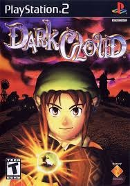

Sinopse
Dark Cloud é um RPG de ação onde o jogador controla o jovem Toan, que deve viajar por vários mundos para reconstruir cidades destruídas pelo malvado vilão, Dark Genie. O jogo mistura exploração, combate em tempo real e um sistema de construção de cidades que é um dos pontos fortes da experiência.
Durante sua jornada, Toan coleta materiais, resolve enigmas, enfrenta inimigos e usa suas habilidades para restaurar os mundos que foram devastados. O jogo apresenta um estilo visual único, com gráficos cel-shading, e se tornou um clássico cult para os fãs de RPGs no PlayStation 2.
Características Principais
- Combate em tempo real com uma grande variedade de armas e habilidades
- Sistema de reconstrução de cidades, onde o jogador deve recolocar edifícios e itens
- Exploração de masmorras geradas proceduralmente, com um sistema de progressão de nível
- História envolvente e personagens cativantes com múltiplas histórias paralelas
- Visuais únicos com estilo gráfico cel-shading e design de personagens carismáticos
- Sistema de troca e coleta de itens, com muitas armas e equipamentos para melhorar
Imagens Adicionais